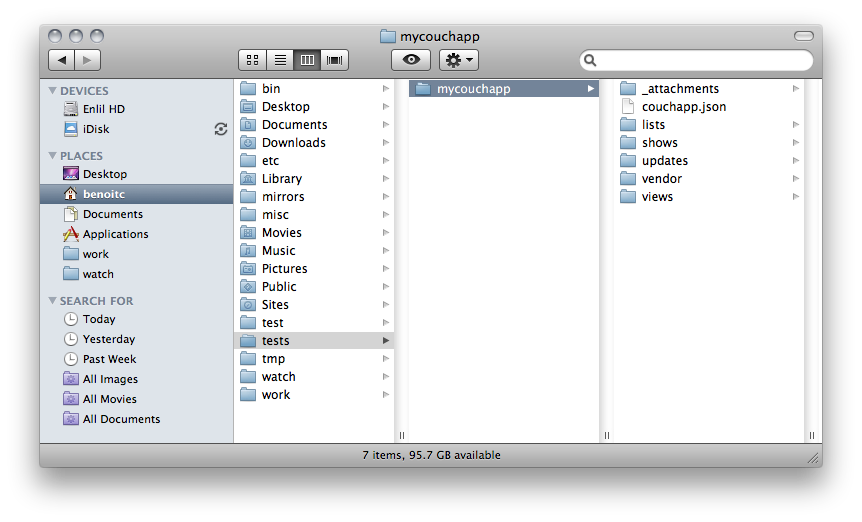
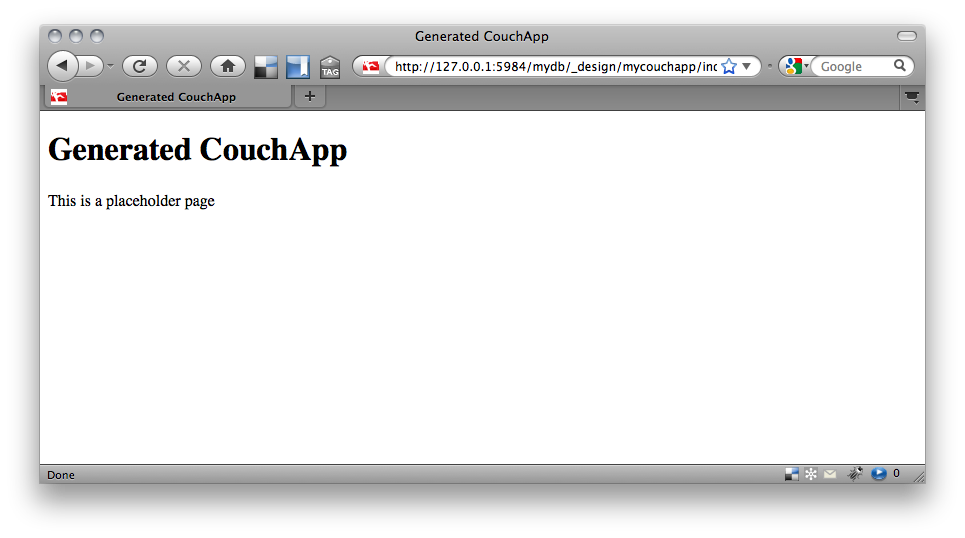
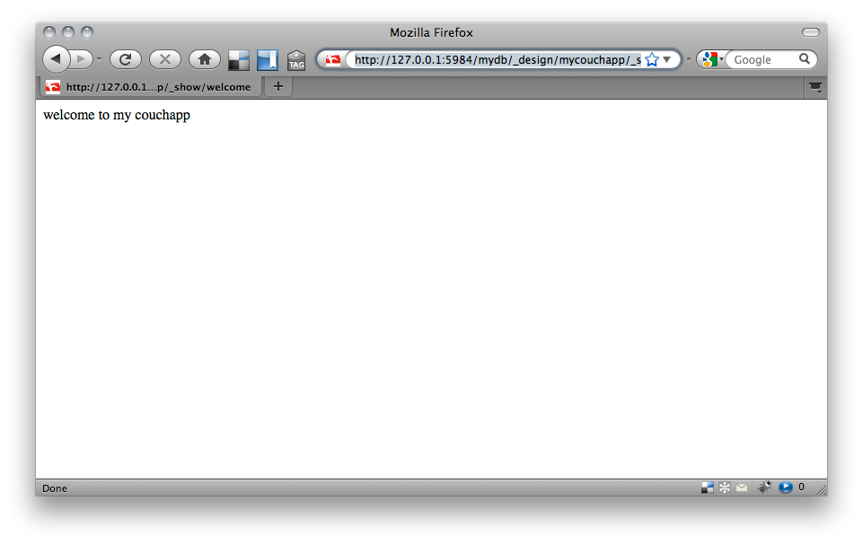

Getting Started
A couchapp is an application located in design document in a database that allows you to render documents and view in any format (could be html, xml, ...). Static files (images, scripts,...) are attachments. A couchapp is rendered by CouchDB to an http client. The basics of formatting documents using show and list functions. These functions convert documents and views, respectively, into non-JSON formats. The rows of each view are processed individually, which keeps long lists from becoming memory hogs.
This quick tutorial will show you how to create your first couchapp. Couchapp need to be installed.
Generate the application
Generate the application from default template :
$ couchapp generate mycouchapp [INFO] Generating a new CouchApp in /Users/benoitc/tests/mycouchapp
This command generate default folder of a couchapp :
Push your application to couchdb
This command push the application mycouchapp on the CouchDB node located at http://127.0.0.1 in the database mydb.
Now you can go at the url http://127.0.0.1:5984/mydb/_design/mycouchapp/index.html in your browser and you will see :
Create your first show
Shows are javascript function added to a design document. They allow to render document in the format you want. For example you could render a post in html, xml, rdf...
A show is available on such url : http://server_uri/dbname/_design/designname/_show/showname/docid
Couchapp allow you to generate basic template of a show function :
$ couchapp generate show welcomeIt create the file welcome.js in /Users/benoitc/tests/mycouchapp/shows : Show function are normally used to render document. But here we will just return a welcome message :
Then again push the couchapp to your CouchDB node :
$ couchapp push mydb
And go on url http://127.0.0.1:5984/mydb/_design/mycouchapp/_show/welcome
You should see :
That's it for now.